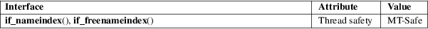

if_nameindex, if_freenameindex − get network interface names and indexes
Standard C library (libc, −lc)
#include <net/if.h>
struct
if_nameindex *if_nameindex(void);
void if_freenameindex(struct if_nameindex
*ptr);
The if_nameindex() function returns an array of if_nameindex structures, each containing information about one of the network interfaces on the local system. The if_nameindex structure contains at least the following entries:
unsigned int
if_index; /* Index of interface (1, 2, ...) */
char *if_name; /* Null−terminated name
("eth0", etc.) */
The if_index field contains the interface index. The if_name field points to the null-terminated interface name. The end of the array is indicated by entry with if_index set to zero and if_name set to NULL.
The data structure returned by if_nameindex() is dynamically allocated and should be freed using if_freenameindex() when no longer needed.
On success, if_nameindex() returns pointer to the array; on error, NULL is returned, and errno is set to indicate the error.
if_nameindex()
may fail and set errno if:
ENOBUFS
Insufficient resources available.
if_nameindex() may also fail for any of the errors specified for socket(2), bind(2), ioctl(2), getsockname(2), recvmsg(2), sendto(2), or malloc(3).
For an explanation of the terms used in this section, see attributes(7).

POSIX.1-2008, RFC 3493.
glibc 2.1. POSIX.1-2001. BSDi.
Before glibc 2.3.4, the implementation supported only interfaces with IPv4 addresses. Support of interfaces that don’t have IPv4 addresses is available only on kernels that support netlink.
The program below demonstrates the use of the functions described on this page. An example of the output this program might produce is the following:
$
./a.out
1: lo
2: wlan0
3: em1
Program
source
#include <net/if.h>
#include <stdio.h>
#include <stdlib.h>
#include <unistd.h>
int
main(void)
{
struct if_nameindex *if_ni, *i;
if_ni =
if_nameindex();
if (if_ni == NULL) {
perror("if_nameindex");
exit(EXIT_FAILURE);
}
for (i = if_ni;
!(i−>if_index == 0 && i−>if_name
== NULL); i++)
printf("%u: %s\n", i−>if_index,
i−>if_name);
if_freenameindex(if_ni);
exit(EXIT_SUCCESS);
}
getsockopt(2), setsockopt(2), getifaddrs(3), if_indextoname(3), if_nametoindex(3), ifconfig(8)